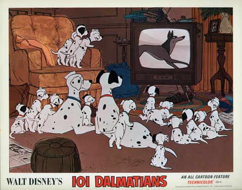

One Hundred and One Dalmatians
A Walt Disney Production
1961
Clyde Geronimi, Hamilton Luske, Wolfgang Reitherman
Behind the Scenes
Art of 101 Dalmatians
'Redefining the Line' Documentary
In a Disney animation classic, Dalmatian Pongo is tired of his bachelor-dog life.
He spies lovely Perdita and maneuvers his master, Roger,
into meeting Perdita's owner, Anita.
The owners fall in love and marry, keeping
and Perdita together too.
After Perdita gives birth to a litter of 15 puppies, Anita's old school friend
Cruella De Vil wants to buy them all.
Roger declines her offer, so Cruella hires the criminal Badun
brothers to steal them -- so she can have a fur coat.

This film is for all dog lovers.
Click the button below to see the story.
See the Story